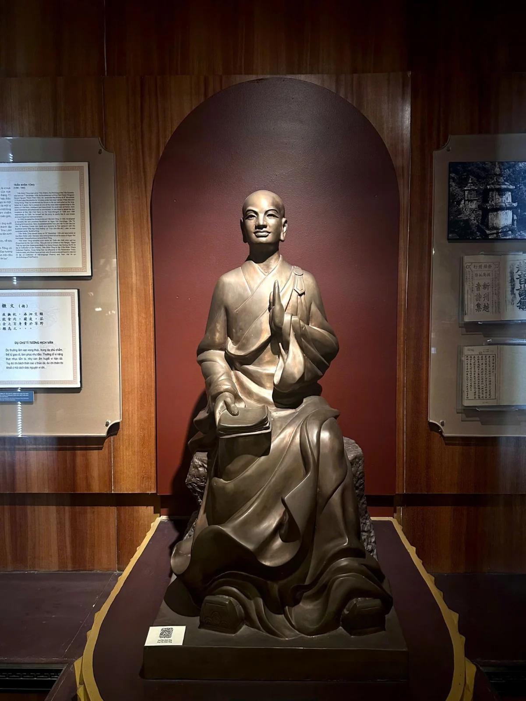
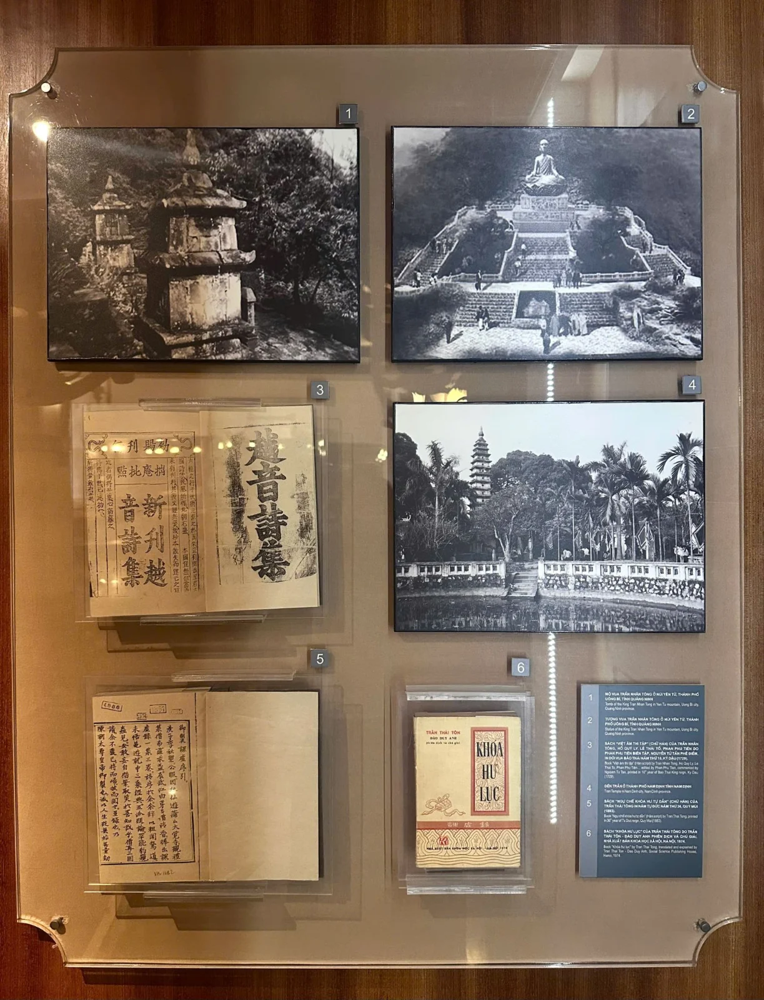
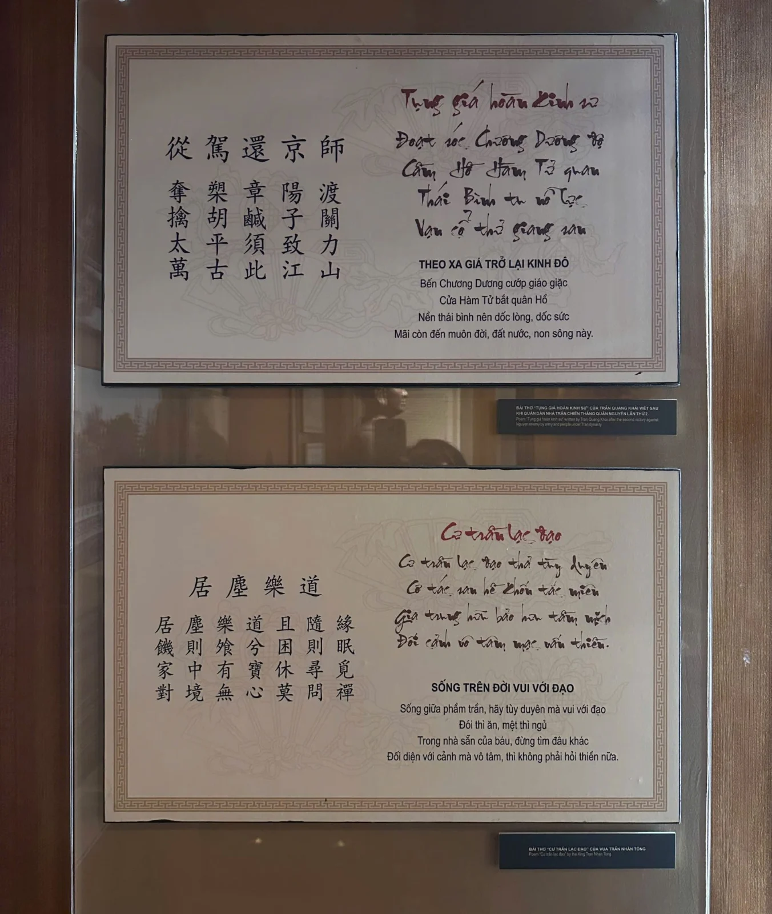

Trong bài
Văn học đời Trần là dấu mốc nổi bật của văn học trung đại Việt Nam, gắn liền với hào khí Đông A, tinh thần yêu nước và sự phát triển của tư tưởng, văn hóa dân tộc.
Khám phá khu trưng bày Văn học đời Trần
Nổi bật ở trung tâm không gian trưng bày là tượng của vua Trần Nhân Tông, phía sau là những bức ảnh về di tích, trang sách chữ Hán và các ấn phẩm được trưng bày giúp người xem hình dung hành trình lưu truyền văn chương qua nhiều thế hệ.


Đặc biệt, tác phẩm Tụng giá hoàn kinh sư của Trần Quang Khải và Cư trần lạc đạo phú của Trần Nhân Tông được trình bày bằng nguyên văn chữ Hán cùng phần diễn giải tiếng Việt. Cách trưng bày này giúp khách tham quan tiếp cận cả hình thức văn tự cổ lẫn nội dung tư tưởng của tác phẩm.

Văn học đời Trần phong phú đủ các loại như: văn chính trị, văn khảo cứu, văn sáng tác. Văn chính trị như: “Hịch tướng sĩ văn” của Trần Quốc Tuấn, “Thất Trảm Sớ” của Chu An, “Sớ” của Lê Tích, của Trương Đỗ, “Vạn Ngôn thư” của Lê Cảnh Tuân. Văn khảo cứu về binh học như: “Vạn kiếp tông bí truyền thư” của Trần Quốc Tuấn, về nho học như: “Tứ thư” của Chu An, “Minh Đạo” của Hồ Quý Ly, về phật học như: "Khóa hư lục" và "Thiền tông chi nam" của Trần Thái Tông... Về thần tích và truyện cổ như: “Việt điện u linh”, “Lĩnh nam chích quái”...
So với văn học thời Lý, văn học đời Trần đã có một bước tiến rõ rệt, khá phong phú về nội dung cũng như hình thức, phần nổi bật trong văn học lúc này là văn học yêu nước thời thịnh Trần. Tinh thần quật khởi kháng Nguyên của dân tộc ta được thể hiện quá đậm đà trong những bài thơ của Trần Quang Khải, Phạm Ngũ Lão, trong bài “Hịch” của Trần Quốc Tuấn hay trong bài “Phú” của Trương Hán Siêu... Quý tộc nhà Trần đã tỏ rõ vai trò tích cực của mình trong giai đoạn lịch sử này. Có thể nói nếu thơ văn thời này biểu hiện được truyền thống anh dũng của dân tộc, thì đồng thời cũng biểu hiện được cái hào khí “Đông A”. Ngoài ra, thơ văn thời này còn có các khía cạnh khác như; ca tụng cảnh trí thiên nhiên, ca tụng tư tưởng nhàn tản hay nói lên nỗi niềm cảm than thời thế. Đặc biệt, đã xuất hiện loại văn bút chiến và phê bình như chỉ trích tinh thần sùng bái đạo Nho một cách mù quáng hay là bài xích đạo Phật, bài xích nhà chùa… Nhìn chung văn học thời này đã phát triển tương xứng với sự trưởng thành của dân tộc, nội dung có nhiều khía cạnh, lời văn có nhiều hình tượng. Ta có thể tự hào đã có một nền văn học viết thích đáng.
Văn học đời Trần là di sản quý giá, kết tinh hào khí dân tộc, chiều sâu tư tưởng và sự phong phú của văn hóa Đại Việt. Qua các tác phẩm tiêu biểu và tư liệu trưng bày tại Bảo tàng Văn học Việt Nam, người xem có cơ hội khám phá những giá trị văn chương, lịch sử và nhân văn đã được lưu truyền qua nhiều thế hệ.
Bảo tàng Văn học Việt Nam